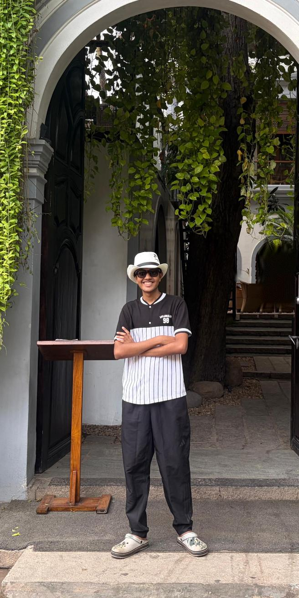

A bit about where I've come from, what I love doing, and where I'm headed.

When I'm away from equations, you'll usually find me chasing a ball or a beat.
This site is my little corner of the internet, built to:
Languages, tools and areas I work with.
What I'm studying this semester at IIT Madras.
Rigorous Single-Variable Calculus
Builds calculus from first principles, starting with where the real numbers come from. Every concept is defined precisely and every result is proved, rather than taught as a set of techniques.
Linear algebra developed through the language of matrices, the foundation for much of applied mathematics, data science and machine learning.
Computational problem-solving across MATLAB, Mathematica, Python and R. This website was built as a project for the course.
First-year university physics.
Have a project idea, an opportunity, or just want to talk cricket and F1? I'd love to hear from you.
Contact Me